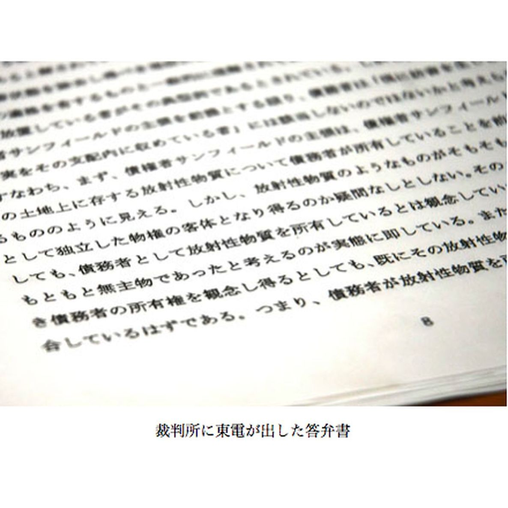

| プロメテウスの罠〔４〕 東電は述べた「放射性物質は無主物である」 (朝日新聞デジタルＳＥＬＥＣＴ) | |
| 朝日新聞 | |
| (2013) | |
原発から飛散した放射性物質は「無主物」であり、原発から飛び散った放射性物質は東電の所有物ではない――。除染の責任はないとする東電の主張の裏で、内部被ばくの不安は首都圏にも広がっている。２０１１年１１月２３日から１２月７日渡って掲載された、朝日新聞の好評連載「プロメテウスの罠」の第４シリーズ「無主物の責任」全１４回を収録した。
内容紹介
原発から飛散した放射性物質は「無主物」であり、原発から飛び散った放射性物質は東電の所有物ではない――。除染の責任はないとする東電の主張の裏で、内部被ばくの不安は首都圏にも広がっている。２０１１年１１月２３日から１２月７日渡って掲載された、朝日新聞の好評連載「プロメテウスの罠」の第４シリーズ「無主物の責任」全１４回を収録した。
初出
朝日新聞 二〇一一年十一月二十四日～十二月七日
第１章 だれのものでもない
第２章 原爆の時よりひどい
第３章 被曝者の先輩として
第４章 不思議な死に方
第５章 「だるい」ピンときた
第６章 国は切って捨てた
第７章 先生２人、話は正反対
第８章 私たちには全部実害
第９章 我が子の鼻血 なぜ
第１０章 自力で測ってみると
第１１章 おおっぴらにいえぬ
第１２章 福島の子たちが心配
第１３章 自分で守るしかない
第１４章 被曝から目そらすな
放射能はだれのものか。この夏、それが裁判所で争われた。
２０１１年８月、福島第一原発から約４５キロ離れた二本松市の「サンフィールド二本松ゴルフ倶楽部」が東京電力に、汚染の除去を求めて仮処分を東京地裁に申し立てた。
――事故のあと、ゴルフコースからは毎時２～３マイクロシーベルトの高い放射線量が検出されるようになり、営業に障害がでている。責任者の東電が除染をすべきである。
対する東電は、こう主張した。
――原発から飛び散った放射性物質は東電の所有物ではない。したがって東電は除染に責任をもたない。
答弁書で東電は放射性物質を「もともと無主物であったと考えるのが実態に即している」としている。
無主物とは、ただよう霧や、海で泳ぐ魚のように、だれのものでもない、という意味だ。つまり、東電としては、飛び散った放射性物質を所有しているとは考えていない。したがって検出された放射性物質は責任者がいない、と主張する。
さらに答弁書は続ける。
「所有権を観念し得るとしても、既にその放射性物質はゴルフ場の土地に附合（ふごう）しているはずである。つまり、債務者（東電）が放射性物質を所有しているわけではない」
飛び散ってしまった放射性物質は、もう他人の土地にくっついたのだから、自分たちのものではない。そんな主張だ。
決定は１１年１０月３１日に下された。裁判所は東電に除染を求めたゴルフ場の訴えを退けた。
ゴルフ場の代表取締役、山根勉（６１）は、東電の「無主物」という言葉に腹がおさまらない。
「そんな理屈が世間で通りますか。無責任きわまりない。従業員は全員、耳を疑いました」
１１年７月に開催予定だった「福島オープンゴルフ」の予選会もなくなってしまった。通常は年間３万人のお客でにぎわっているはずだった。地元の従業員１７人全員も１１年９月いっぱいで退職してもらった。
「東北地方でも３本の指に入るコースといわれているんです。本当に悔しい。除染さえしてもらえれば、いつでも営業できるのに」
東電は「個別の事案には回答できない」（広報部）と取材に応じていない。

原発から飛び散った放射性物質は「無主物」である――。
東京電力は仮処分の申し立てに対し、こう主張した。しかし、裁判所は「無主物であるかどうか」には立ち入らなかった。汚染の除去が焦点となった。
東電の裁判書面によるとこうだ。
「放射性物質を除去するとすれば、広大な敷地の土壌や芝をすべて掘り起こすという非常に大がかりな作業が必要となり、多額の費用を要することが想定される」
「それはもはや放射性物質と土地の分離とは言えないのではないか」
「このような作業を行うことができる立場にあるのは債権者（ゴルフ場）ではないかと思われる」
要するに放射性物質は、それがくっついた土地の持ち主が除去せよ、という主張だ。
これについて裁判所はいう。
「除染の方法や廃棄物の処理の具体的なあり方が確立していない現状で除染を命じると、国等の施策、法の規定、趣旨等に抵触するおそれがある」
「事故による損害、経済的な不利益は、国が立法を含めた施策を講じている」
つまり、除染も賠償も、国がいろいろな手立てを考えているのだから、それを待て、ということだ。
確かに、国による賠償の枠組みに基づき、東電はさまざまな補償への要求に対応を始めている。まずはこの枠組みに沿って、ゴルフ場も請求するように東電は求めている。
しかし、ゴルフ場側は、国や東電が対応してくれないから裁判所に訴えるしかなかったのだ。時間ばかりがかかる役所の処理に任せていたら、民間企業は倒産してしまう。
それにしても、である。
さいたま市の医師、肥田舜太郎（９４）はいった。
「日本中除染するのは不可能だと国が判断したんじゃないでしょうか。原爆のときの日本政府以下の対応ですね」
肥田は自身が広島原爆の被爆者で、当時は軍医だった。
原爆が落とされた昭和２０年８月６日、たまたま郊外の村にいて、直接の被爆はせずにすんだ。
直後から、村に逃げてきた被爆者の手当てをした。
人口２千人弱の村に、１万人を超す被爆者が流れ込んだ。みんな血だらけだった。うめき声や叫び声、すすり泣く声があちこちから聞こえた。
今も健在な原爆被災者は多いが、そのうえ、医師として実際に被爆者の治療に当たった経験者は肥田舜太郎（ひだしゅんたろう）（９４）ぐらいしかいない。
福島第一原発から放射性物質が飛散したいま、肥田は、講演に引っ張りだこだ。週平均５回。１日２回のときもある。
テーマは「原発事故でいま、日本に何が起こっているか」だ。
「ご紹介いただきました、広島で被爆した医師の肥田です」
自分で杖をついて階段を上がり、演壇に立つ。張りのある声。肌はつやつやしている。主催者が用意したいすには座らず、２時間立ったままで話し続ける。会場は満席だ。立ち見の聴衆さえいる。
話が終わると、待っていたように質問が飛ぶ。原発ではいま、何が起きているのか。放射線はどんな影響があるのか。
肥田は決まって答える。
「いま飛散している放射性物質は広島の原爆のものと同じです。ですから、広島で起きたことがこれから起きる可能性があります」
会場は静まり返る。
「でも、被曝（ひばく）したから発病するとは限りません。広島の被爆者でも、６０年たってまだ生きている人がたくさんいる。現に私も、広島原爆の被爆者の一人ですから。大切なことは、広島のときの過ちを繰り返さないことです」
広島のときの過ち。それは、政府が内部被曝を重視しなかったために起きた悲劇だった。
東日本大震災から１カ月後の１１年４月、肥田は広島の原爆ドームに近いホテルで、被爆者団体の役員、坪井直（つぼいすなお）（８６）と会った。
肥田は旧知の坪井と昼飯を食べた。向かい合った坪井に、肥田はいった。
「これから福島で被曝で苦しむ人がたくさん出る。彼らは、自分にどんな影響が出るのか分からない。被曝の先輩であるあなた方が教えてあげるほかない」
坪井はとまどった。広島・長崎の被爆者はこれまでさんざん苦労してきた。その人々に、さらに人の悩みまで背負えなんていえるのだろうか。
だが、肥田は念を押すようにいった。
「何でもない、心配するな、なんて間違ってもいってはいけない。いつ原爆病みたいになるか、それはだれにも分からないんだから」
軍医だった肥田舜太郎（ひだしゅんたろう）（９４）は原爆投下の昭和２０年８月６日、たまたま広島郊外の村にいて、直接の被爆をせずにすんだ。しかし直後から、次から次へ村に逃げてきた被爆者を見続けることになる。
みんな地べたに転がって、次々に死んでいった。声が出ず、食いつきそうな目で肥田を見つめている人も多かった。
赤ん坊をおぶった母親が「この子を助けてください」と泣きながらすがりついた。しかしその子は太ももが切り裂け、もうすでに死んでいた。母親は錯乱しており、何をいっても理解できる状態ではない。
肥田は子どもを手当てして見せ、母親に「今夜はこの子を起こすんじゃないよ。向こうで休みなさい。明日、乳がよく出るように」といった。母親は肥田に手を合わせ、血だらけの胸に冷たくなった赤ん坊を抱いて去っていった。
原爆で大やけどを負った人は、最初の３日間で死んだ。しかし、その後、変な死に方をする人が出てきた。軽いやけどしかないのに死んでしまうのだ。
まず熱が出て、鼻や口、そして目から血を流し始めた。口の中を見ると腐っていた。髪の毛にさわるとごそっと抜けた。後になって分かることだが、放射線による急性症状だった。しかし当時は、放射線がどんなものかも知らなかった。死んでいく患者を前に、どうすることもできなかった。
そのうち、さらに不思議な死に方をする人が出てきた。
最初は若い主婦だった。松江からきたというその女性は、原爆が落ちたときは岡山にいた。１週間後、夫を捜しに広島に入り、何日か焼け跡を歩いた。肥田のいた村でやっと夫を見つける。夫は重症だった。
ある日、肥田は女性が着物姿のまま、重症の夫の横で仰向けに寝ているのに気がついた。具合が悪そうだったが、聴診器をあててみても異常は見つからない。風邪だろうと思って薬を与えた。
女性の容体は、日増しに悪くなった。顔色は青くなり、肌に斑点が出てきた。斑点は、原爆を直接浴びた被爆者の皮膚に、死ぬ間際に出てきたものと同じだった。女性は血をはいて、髪の毛が抜けた。それからまもなく死んだ。
原爆に遭っていないのに、なぜ女性は死んだのか。それが、肥田が内部被曝（ひばく）にこだわるようになったきっかけだった。
肥田舜太郎（９４）は戦後、東京で診療所を開く。うわさを聞き、原爆症ではないかと疑う人たちが大勢やってきた。彼らに共通したことは、口々にだるさを訴えることだった。
これまで広島や長崎での被爆関連患者６千人を診た。うち４千人は、爆発直後は広島や長崎にいなくて、後から市内に入ったり、少し離れた所にいたりした人だった。症状は１０年後、２０年後でも出た。３０年以上たって出た人もいる。その人は長野県から肥田の診療所にやってきた。
診察室に入ると、もじもじしていたので、肥田はピンときた。看護婦を部屋の外に出させると、男性は被爆者であることを明かした。
当時、被爆者は就職や結婚で差別を受け、家族にさえ話していない人もいた。男性もそんな一人だった。
男性は最近、急に体がだるくなって、仕事ができなくなったと告げた。大学病院に行ったがどこも悪くないといわれたという。原爆後に広島に入った「入市（にゅうし）被爆者」だ。原爆が落とされたときは岡山にいたが、翌日、父を捜しに広島に行った。
しばらくして体がだるく感じるようになり学校を休んだ。初めはあまり気にしていなかったが最近は耐えられなくなり肥田のところにきた。
男性は診察の途中、「すみません、だるくて」といい、いすから降り、床に座ってしまった。健常者の「だるさ」とは明らかに異質のものだ。そうした人々は、倦怠（けんたい）感から仕事を休みがちになり、「怠け者」といわれた。病院に行っても原因が分からず、「神経過敏症だ」「ノイローゼ」とされてしまう。
肥田は「共通しているのは、原爆後、広島に入ったり、広島の近くに住んでいたりしていること。とすれば、原因は原爆の放射線以外に考えられなかった」という。
しかし、国はそれが原爆のせいだとは認めなかった。
長崎県の森内実（７４）は８歳の昭和２０年８月９日、長崎の爆心地から４・８キロの地点で被爆した。がんや白内障を患ったが、「原爆との因果関係が不明」として、なかなか国に原爆症と認めてもらえず、裁判を起こし、ようやく認定された。
「私たちは２キロとか３キロでずっと線引きされ、爆心地から遠いので被爆者手帳をもらえない人もいた。放射能は同じなのに、国はいったいなにを基準にしているのでしょう」
今回、政府が被曝（ひばく）の認定をどうするのかはまだわからない。
軍医として広島で被爆した肥田舜太郎（９４）が内部被曝（ひばく）にこだわるのは、原爆以後に広島に入った「入市（にゅうし）被爆者」を数多く診てきたからだ。
国から原爆症と認められなかった被爆者たちはまとまって裁判を起こした。つい８年前のことだ。肥田はその裁判で、被爆者側に立って大きな役割を果たした。
内部被曝の因果関係を証明するのは困難だ。裁判で国は「内部被曝は無視し得る」と切って捨てた。被爆者たちは論理ではなく、自らの体験を語るしかなかった。その中で、被爆者の治療に当たってきた肥田の経験は大きかった。
７年前の大阪地裁。肥田は証言台で、広島で経験したことを話した。
「このような議論をするとき一番大事な発火点は、人間として被害を受けた被爆者なんです。それは、物理学者の議論でもなく、医学者の議論でもないのです」
２年後、大阪地裁で被爆者たちは勝利する。国は控訴したが、棄却された。
その大阪地裁で国側の証人だったのが、東大大学院教授の小佐古敏荘（こさことしそう）（６２）だ。国が決めた年間２０ミリシーベルトの被曝基準を「私のヒューマニズムから受け入れがたい」と涙ながらに批判し、内閣官房参与を辞めた、あの人だ。
小佐古は証言後、「原爆放射線による人体への影響の主なものは、初期放射線による外部被曝であり、内部被曝によるものはほとんどない」とする報告書をまとめている。それは肥田に対立するものだ。しかし裁判所は肥田の考えを受け入れた。
一連の原爆症の裁判は、その後も各地で被爆者たちが勝ち続ける。しかし、内部被曝を積極的に認めない国の姿勢は基本的には変わっていない。補償を受けられない被爆者たちは、年老いた今もやむなく裁判を起こし続けている。
被爆者の病気が放射線によるものなのか。国の姿勢からは「われわれの方が科学的に正しい」という考えがにじみ出ている。
肥田は、政府が今回の事故後に「ただちに人体には影響はありません」と何度も強調したことに腹が立っている。
「ただちにはないが、もしかしたら影響が出る人もいるかもしれませんと、ちゃんと付け加えなくてはいけないでしょう。６６年前の原爆の話が今もこじれているんだ。福島でも、また同じことが繰り返されるかもしれない」
福島市飯野町は、福島第一原発から約５０キロのところにある。
１１年１１月１３日、町の学習センターで、福島市社会福祉協議会飯野協議会が主催する講演会が開かれた。約９０人の住民が集まった。
「平常時の２５倍の放射線の中でどう生活すればいいか。異なる見方の２人の先生の話を参考にしてください」。会長の古関善一郎（７３）のあいさつで講演会は始まった。飯野町は空間線量が毎時１マイクロシーベルトを上回るレベルで推移している。
招かれたのは、兵庫医科大学講師の振津（ふりつ）かつみ（５２）と、東北大学大学院教授の石井慶造（６３）の２人。
振津は、被爆医師の肥田舜太郎（９４）と同じように、大阪で原爆被爆者の健康管理に携わってきた医師だ。
振津は、避難しないで福島に残っている人にどう話したらいいか悩んだが、率直に話すことにした。「みなさんは放射線管理区域の基準を上回るところに住んでいます。この現実から出発しないといけません」
日本の法律は、３カ月で１・３ミリシーベルトを超えるところを放射線管理区域として、一般の場所とは違う取り扱いを定めている。振津の話はこの現実を踏まえたものだ。
「被曝（ひばく）すれば病気になるリスクが高まる。食べ物からの被曝を減らさないといけない。リスクがあることを認め、万全の態勢で臨まないといけません」
続いて石井が立った。福島市の放射能対策アドバイザーを務めている。話は振津とは対照的だった。
石井は、県の測定結果などを示しながら「水道水も野菜も果物も、放射線量はほとんどゼロ。だから、内部被曝なんてものはないのです」。
自身の研究では、セシウムが土壌中の粘土に吸着されたことから、「粘土が福島を救った」という。
そして、低線量の放射線はむしろ体に良いのだというデータを示し、「内部被曝も外部被曝も大丈夫だよということを、もっと広めて風評被害をなくし、東北に人が来るようにする必要があります」と結んだ。
司会が「質問は２人まで受け付けます」と呼びかけた。しかし、振津の話にも石井の話にも質問は出ない。住民は２人の話をじっと聞いているだけだった。
「不安と安心が入り乱れていると思いますが、それぞれの頭で考えて放射線対策をしてください」。古関がそうあいさつし、３時間に及ぶ講演会は終わった。
福島市飯野町で開かれた原発事故講演会。出席した住民の中に、松崎三枝子（６２）がいた。会場の近くの自宅で、夫と２人で暮らしている。
いったい自分たちはこれからどうなるのか。このまま、ここに住んでいて大丈夫なのか。専門家の話が聞けるので参考になると思い、講演会に出かけた。
しかし話を聞いても、結局どうしたらいいのか分からなかった。２人の研究者の意見は正反対で、専門的なことが分からない自分には判断がつかない。「結局これまでと同じように、自分で気をつけていくしかないと思いました」
松崎は、近くのスーパーで買い物をするとき、なるべく県外産を買う。片道２時間かけて、食料品を新潟県まで買いに行くこともある。トマトは地元産が２個で１４８円、北海道産は２個で３９８円だが、北海道産を買う。
「だって、心配しながら食べたっておいしくないじゃないですか」
自宅の庭は土だったが、１５０万円かけて全部コンクリートを打った。放射線の測定器で地表を測ると、土のときは１・７マイクロシーベルトだったのが、コンクリートにした後は０・４マイクロシーベルトに下がった。
「東京電力や国など補償をする側の人たちは風評被害といいたいのでしょうけど、私たちにとっては全部実害ですよ。だって自分で測って数値が分かっていますから」
農家の人も風評という言葉を使う。「それは国や東電がきちんと補償してくれないからです」
原発から離れた飯野地区は、避難対象からは外れている。
「避難できる経済的な余裕があるなら私はすぐにも避難したい。それがないからここにいるしかない。今日も明確な答えは見つかりませんでしたが、最後は自分で決断します」
講演会を主催した福島市社会福祉協議会飯野協議会の会長、古関善一郎（７３）はいう。
「私たちはそう簡単にふるさとを捨てられないのです。それまでは心配しながら生活するしかありません。病気も全員がなるわけでないでしょうし。病気が出たら補償してもらうしかない。私たちはモルモットなんですから」
古関自身、米は地元では買わず、８０キロの道のりの会津若松市まで買いに行く。家では１９歳と１６歳の孫が一緒に暮らしている。
「米は毎日のもの。孫に食べさせるわけにいきません」
福島から遠く離れた東京でも、お母さんたちは判断材料がなく、迷いに迷っている。
たとえば東京都町田市の主婦、有馬理恵（３９）のケース。６歳になる男の子が原発事故後、様子がおかしい。４カ月の間に鼻血が１０回以上出た。３０分近くも止まらず、シーツが真っ赤になった。
近くの医師は「ただの鼻血です」と薬をくれた。しかし鼻血はまた続く。鼻の奥に茶色のうみがたまり、中耳炎が２カ月半続いた。
医師に「放射能の影響ではないのか」と聞いてみたが、はっきり否定された。
しかし、子どもにこんなことが起きるのは初めてのことだ。気持ちはすっきりしなかった。
心配になって１１年７月、知人から聞いてさいたま市の医師の肥田舜太郎（９４）に電話した。
肥田とは、ＪＲ北浦和駅近くの喫茶店で会った。
「お母さん、落ち着いて」
席に着くと、まずそういわれた。肥田は、広島原爆でも同じような症状が起きていたことを話した。
放射能の影響があったのなら、これからは放射能の対策をとればいい。有馬はそう考え、やっと落ち着いた。
周囲の母親たちに聞くと、同じように悩んでいた。そこで、１１年１０月２０日、地元の町田市に、子どもたちの異変を調べてほしいと要望した。
しかし市からは、「市では今はできないので、お母さんたちが自分でやってください」といわれたと有馬はいう。
いても立ってもいられず、その夜、母親仲間にメールを送った。
「原発事故後、子どもたちの体調に明らかな変化はありませんか」
すると５時間後、有馬のもとに４３の事例が届いた。いずれも、鼻血や下痢、口内炎などを訴えていた。
こうした症状が原発事故と関係があるかどうかは不明だ。
かつて肥田と共訳で低線量被曝（ひばく）の本を出した福島市の医師、斎藤紀（おさむ）は、子どもらの異変を「心理的な要因が大きいのではないか」とみる。
それでも有馬は心配なのだ。
首都圏で内部被曝というのは心配しすぎではないかという声もある。しかし、母親たちの不安感は相当に深刻だ。
たとえば埼玉県東松山市のある母親グループのメンバーは、各自がそれぞれ線量計を持ち歩いている。
広島で被爆した医師、肥田舜太郎（９４）は１１年１０月２２日、埼玉県東松山市で講演し、自身の経験を引きながら内部被曝（ひばく）について語った。
その会場に、東松山市の主婦、江頭有希（えがしらゆき）（４４）がいた。原発事故後、４歳の息子のおねしょがやまなくなっていた。国は「大丈夫」というが、自分が住む地域はどうなっているのか。顔なじみの母親らと放射線の測定を始めた。
１人が子どもの尿を検査機関に持ち込んだ。セシウム１３７が１キロあたり０・２４ベクレル検出されたので、食べ物に気をつけ始めた。別の母親は８千円の検査費を自腹で払い、小学校の敷地の土を調べてもらった。１キロあたり１４１０ベクレルが出た。
国の規則では、原子炉施設から出るごみ１キロあたり放射性セシウムが１００ベクレルを超えるとそれは放射性廃棄物だ。その１４倍を超えていた。
江頭たちは、東松山市に要望書を出した。署名は計３千集まった。
一、給食で使う食材の産地を公開し、放射線量を測定してほしい。
一、きめ細かい放射性物質の計測をしてほしい。
しかし話は進まなかった。
市は学校の放射線を測定する場合、校庭の１カ所のみを測っていた。江頭は、子どもたちが過ごす校舎の中も測ってほしいと要望した。
市によると、校舎の放射線の数値は校庭の測定値に０・４をかけて算出していて、実測していない。
「校舎の中も測ればいいじゃない。計算上の数値ではなくて、実際の数値を知りたい」。しかし市は、現在も校舎の中は測っていない。
江頭は議会にも働きかけた。議員に会うのは初めてだったが、放射能が心配だと伝えた。１１年１２月議会には請願書も出した。
市も最近、ホットスポットの調査を始めるなど、江頭たちの要望を一部では受け入れ始めた。それでも、母親たちの危機感から離れている。
仲間の母親（３８）が、小学校で教材にドングリを使うというので心配になり、市に電話をした。
「口にドングリを入れるわけじゃないですから、といわれました。福島だって人が住んでいるじゃないですか、と」
だが、その福島では人々の感情の行き違いが目立つようになっている。
「町を出る人はこっそり出ていきます、誰にもいわずに」
福島市飯野町の松崎三枝子（６２）はそういった。
松崎の親戚が１１年７月、被曝（ひばく）を避けて山形に避難したときも、周囲にいわず、こそっと避難していった。小学校では子どもたちが、お別れ会もないまま、ある日突然いなくなる。
「私たちは避難します」とおおっぴらにはいえない。そんな空気が周りにあるという。
「裏切った、逃げ出したみたいにいわれるからです。非国民、みたいな目で見られると感じます」
同じ福島市内に住む斎藤道子（４７）は原発の事故後、県外の知人から避難するよう勧められた。しかし、中３と高２の息子は「絶対に避難しない」といった。友だち関係があってのことらしかった。
最近は放射能のことを話題にしないようにしている。「放射能が心配だ」といおうものなら、「県や市が大丈夫だといっているのにあんたは何だといわれる雰囲気だ」という。
斎藤は子どもの部活動もあり、今すぐの避難は考えてはいない。しかし、本当に危ないなら避難したい。その気持ちにブレーキがかかる。
「県や市は大丈夫だというし......。結局、動けなくなってしまうのです」
１１年１１月１６日、福島市内の米から基準値超の放射性セシウムが検出された。福島市の放射能対策アドバイザーで東北大大学院教授、石井慶造が、飯野町で開かれた講演会で「福島市では内部被曝はない」と語ったが、そのわずか３日後のことだ。福島県知事はその１カ月前、１１年１０月にすでに安全宣言を出している。
「いったい何を信じていいのか」
その講演会に出ていた松崎は途方に暮れる。自分の身は自分で守るしかない。だから、なるべく内部被曝しないように、県内産の食材を控えている。
「命は二つありませんから」
さいたま市の医師の肥田舜太郎（９４）はいう。
「政府が被害を小さく見せようとし、事実をきちんといわないから、住民の間で反目が生まれるのです。そして住民の対立は、政府や東電にとっては都合のよいことなのです」
放射線は見えず、においもない。被害はまだはっきりと分からない。
「被害が出てくるのはこれからです。６６年前の原爆で、被害者がいまだに国を相手に裁判を起こしている。これが事実です」
被爆者以上に、病気との因果関係を証明するのが難しいのが被爆２世だ。国は「遺伝的な影響が解明されていない」と、希望者に年１回の健康診断をしているだけだ。
広島市の佐上順子（さがみじゅんこ）（６３）は被爆２世だ。父が爆心地から２キロ以内で被爆し、その３年後に生まれた。
小さいころから体が弱く、貧血でよく倒れた。頭痛もひどかった。目にものもらいがよくできた。おなかの調子は悪く、においのきついものは食べられなかった。
２年前に人間ドックを受けたとき、胃に奇形があることが初めて分かった。Ｘ線で見ると、胃はヒョウタンのような形をしていた。医者は「小さいときはもっとひどかったはずですよ」といった。
貧血や胃の奇形が原爆と関係があるかどうかは分からない。佐上自身、気にはかかるが、努めて「自分はおなかの調子が悪い人」と思うようにしてきた。
しかし７年前に亡くなった父は、「順子の症状は原爆のせいだと思う」と家族に語っていたという。
だから佐上は福島の子どもたちのことが心配だ。政府は内部被曝（ひばく）の実態をしっかり調べてほしいと願う。
「子どもが私のようになってほしくない。親が子どものことを心配するのはもっと大変です」
しかし、鼻血や下痢を原発事故に結び付けて考えるのは「非科学的」といわれる状況だ。
政府の「低線量被ばくのリスク管理に関するワーキンググループ」では議論が続いている。
研究者が１１年１１月から話し合いを始め、年内に報告書をまとめる予定だが、日本弁護士連合会は１１年１１月２５日、そんなワーキンググループの即時中止を求める声明を出した。
低線量被曝の健康影響に否定的な見解の研究者が多すぎる、というのだ。
京都の弁護士、尾藤廣喜（びとうひろき）（６４）は「いったい何を土台に議論しているのか」と首をひねる。
尾藤は厚生省のキャリア官僚だった。水俣病では、国が原因企業であるチッソを擁護し、患者を切り崩した。それに失望して弁護士に転身した経歴を持つ。肥田舜太郎（９４）が証言した７年前の大阪地裁の裁判で、被爆者側の弁護士だった。
「まずは被害の実態を把握しなければ始まらないでしょう。加害者側や行政側に被害の線引きを絶対にさせてはいけない。水俣病や薬害、原爆症の再現になる」
広島で被爆した医師、肥田舜太郎（９４）は１１年１１月７日、大阪へ講演に行く途中で転び、胸の骨にひびが入った。しかし「内部被曝（ひばく）を話せるのは、被爆者を見続けた自分以外いない」。入院もせず、各地を飛び回っている。
肥田は、今回の原発事故で日本の国土の多くが汚染されてしまったとみる。それに対して政府は何ら有効な手を打っていない。
「６６年前の原爆の放射線の影響を、政府はきちんと調べてこなかった。だから何も知らないのです」
肥田は講演ではそれを踏まえて語る。「内部被曝はもうゼロにはできない。あとは自分で健康を守る努力をすることだ。僕たちはそうやって放射線に勝ってきた」
たばこをやめ、早寝早起きし、ご飯をよくかむ――。そんな例を挙げながら、心構えを説く。
子どもが鼻血を出した東京都町田市の有馬理恵（３９）はそんな肥田の話に、救われた気持ちになる。「うちの子も内部被曝したんだ、けれどそれは対処できるんだ、と」
有馬は原発事故後、行政のいうことが信じられなくなった。
被災地のがれきの受け入れもそうだ。環境省は１キロあたり８千ベクレル以下の焼却灰ならそのまま埋め立てしてもいいと決めた。しかし原子炉施設からのごみは、放射性セシウムであれば同１００ベクレル超は放射性廃棄物になり、特別な処分が必要だ。環境省が認めたのは、その８０倍もの濃度である。有馬たちは東京都や町田市に見直しを求めている。
事故直後、当時官房長官だった枝野幸男は「ただちに人体には影響はありません」と繰り返した。１１年１１月８日、衆議院予算委員会の質疑で、経済産業大臣となった枝野がその言葉について釈明をした。
「３９回の記者会見のうち、そういったのは７回で、うち５回は食べ物、飲み物の話です」
「一般論でいったのではなく、一度か二度摂取してもただちに問題とはならないと申し上げたのです」
有馬はネットの動画サイトでこの答弁を聞いて耳を疑った。
「食べ物の話なんかじゃなかった。まったく違う」
政府は事実を過小評価する一方で「安全」を強調している。有馬はそう考える。それが国民の疑心と分断をつくりだしているのだ。
「まわりからなんといわれようと、自己防衛するしかないと思います」
原発事故からまもなく９カ月。浪江町から避難した菅野（かんの）みずえ（５９）は、福島市に隣接する桑折町（こおりまち）の仮設住宅で暮らしている。
雪の季節を迎え、福島はめっきり寒くなった。鉄骨づくりの仮設住宅は結露がひどく、すきま風が遠慮なく入ってくる。
原発から飛散した放射性物質は「無主物」である――。東京電力は、福島のゴルフ場が除染を求めた仮処分申請の答弁書でこう述べた。
みずえは無主物の話を聞くと、しばらく黙りこんだ。
「誰のせいでこうなったんですか。あなたたちのせいなんですよ、といってやりたい」
みずえも長男の純一（２７）も、自分がどれだけ内部被曝（ひばく）したのか分かっていない。だから余計心配だ。
「将来、私たちの体に何かあったとしても、このまま被曝はなかったことにされるのでしょうか」
ゴルフ場の仮処分事件では、東京地裁が一つの判断を示している。
それは、文部科学省が決めた校庭利用の暫定基準値「毎時３・８マイクロシーベルト」についてのものだ。
福島政幸裁判長は「ゴルフ場はそれを下回っており、子どもでも屋外で活動しているのだから、営業に支障はない」と述べた。
３・８マイクロシーベルトは年間だと３３ミリシーベルトになる。私たちがこれまで経験したことのない環境だ。
スーパーのイオンは１１年１１月８日、放射性物質が検出された食品は原則売らないと発表した。消費者から６千件の要望があったからだ。食品に対する国の暫定基準値がいかに信用されていないかを示している。
７年前の大阪地裁。広島で被爆した医師の肥田舜太郎（ひだしゅんたろう）（９４）は４時間の証言をこんな言葉で結んだ。
「人類がこれからどうするのか議論をするときは、被爆者を大事にし、自分の理解を深める努力をすることが一番大事です。裁判官の皆さんも、いいか悪いかを裁くという狭い視野ではなく、大きな立場から、被爆者を見て判断願いたい」
その思いはいまも変わらない。
「原爆では、米国が内部被曝をなかったことにしました。福島が同じ軌道をたどることは絶対にあってはならないのです」
（＝敬称略）
プロメテウスの罠〔４〕 東電は述べた「放射性物質は無主物である」
著 者 朝日新聞（前田基行）
発行所 朝日新聞社
〒１０４―８０１１ 東京都中央区築地５―３―２
http://www.asahi.com/
発売所 朝日新聞社デジタル本部
〒１０４―８０１１ 東京都中央区築地５―３―２
http://www.asahi.com
２０１２年３月２日 ＷＥＢ新書版発行
２０１３年１１月３０日 ＥＰＵＢ版発行
©2012 The Asahi Shimbun Company
All rights reserved. No reproduction or republication without written permission.
ISBN 978-4-90712-553-0
〈ご注意〉本コンテンツは、購入者個人の閲覧目的のためのものです。私的範囲を越える利用・譲渡などは禁止します。
〈おことわり〉本コンテンツは２０１２年３月２日に刊行されたＷＥＢ新書版を底本としました。ＥＰＵＢ版の刊行にともない、体裁や表記を直した場合があります。 企業、組織などの名称、人物の役職、肩書等はいずれも記事初出当時のものです。